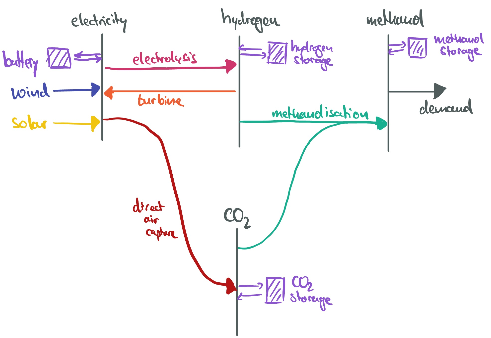

Models for E-Fuel Production#
This section builds the foundation of a simple model to assess the economics of islanded methanol production in a region of choice. The model can optimise investment and operation of wind and solar, electrolysers, turbine, hydrogen and battery storage, direct air capture, CO\(_2\) storage, methanolisation and methanol stores to supply a constant methanol demand of 1 TWh/a.

Model Foundation#
import pandas as pd
import pypsa
from pypsa.common import annuity
Cost Assumptions#
We take techno-economic assumptions from the technology-data repository which collects assumptions on costs and efficiencies:
YEAR = 2030
url = f"https://raw.githubusercontent.com/PyPSA/technology-data/master/outputs/costs_{YEAR}.csv"
costs = pd.read_csv(url, index_col=[0, 1])
costs.loc[costs.unit.str.contains("/kW"), "value"] *= 1e3
costs = costs.value.unstack().fillna({"discount rate": 0.07, "lifetime": 20, "FOM": 0})
We calculate the capital costs (i.e. annualised investment costs, €/MW/a or €/MWh/a for storage), using the discount rate and lifetime.
a = costs.apply(lambda x: annuity(x["discount rate"], x["lifetime"]), axis=1)
costs["capital_cost"] = (a + costs["FOM"] / 100) * costs["investment"]
Time Series#
The wind and solar capacity factor time series have been retrieved from model.energy. Go there to find more time series for other countries and plug them in here.
RESOLUTION = 3 # hours
url = "https://model.energy/data/time-series-ca2bcb9e843aeb286cd6295854c885b6.csv" # South of Argentina
ts = pd.read_csv(url, index_col=0, parse_dates=True)[::RESOLUTION]#
ts.head(3)
| onwind | solar | |
|---|---|---|
| 2011-01-01 00:00:00 | 0.910 | 0.032 |
| 2011-01-01 03:00:00 | 0.853 | 0.000 |
| 2011-01-01 06:00:00 | 0.795 | 0.000 |
Model Initialisation#
Add buses, carriers and set snapshots.
n = pypsa.Network()
for carrier in ["electricity", "hydrogen", "co2", "methanol"]:
n.add("Bus", carrier, carrier=carrier, unit="t/h" if carrier == "co2" else "MW")
n.set_snapshots(ts.index)
n.snapshot_weightings.loc[:, :] = RESOLUTION
carriers = {
"wind": "dodgerblue",
"solar": "gold",
"hydrogen storage": "blueviolet",
"battery storage 3h": "yellowgreen",
"battery storage 6h": "yellowgreen",
"electrolysis": "magenta",
"turbine": "darkorange",
"methanolisation": "cyan",
"direct air capture": "coral",
"co2 storage": "black",
"methanol storage": "cadetblue",
"electricity": "grey",
"hydrogen": "grey",
"co2": "grey",
"methanol": "grey",
}
n.add("Carrier", carriers.keys(), color=carriers.values());
Demand#
Add a constant methanol demand adding up to an annual target production of 1 TWh of methanol:
n.add(
"Load",
"demand",
bus="methanol",
p_set=1e6 / 8760,
);
Wind and Solar#
Add the wind and solar generators:
n.add(
"Generator",
"wind",
bus="electricity",
carrier="wind",
p_max_pu=ts.onwind,
capital_cost=costs.at["onwind", "capital_cost"],
p_nom_extendable=True,
);
n.add(
"Generator",
"solar",
bus="electricity",
carrier="solar",
p_max_pu=ts.solar,
capital_cost=costs.at["solar", "capital_cost"],
p_nom_extendable=True,
);
Batteries#
Add a 3-hour and a 6-hour battery storage:
for max_hours in [3, 6]:
n.add(
"StorageUnit",
f"battery storage {max_hours}h",
bus="electricity",
carrier=f"battery storage {max_hours}h",
max_hours=max_hours,
capital_cost=costs.at["battery inverter", "capital_cost"]
+ max_hours * costs.at["battery storage", "capital_cost"],
efficiency_store=costs.at["battery inverter", "efficiency"],
efficiency_dispatch=costs.at["battery inverter", "efficiency"],
p_nom_extendable=True,
cyclic_state_of_charge=True,
);
Hydrogen#
Add electrolysers, hydrogen storage (steel tank), hydrogen turbine:
n.add(
"Link",
"electrolysis",
bus0="electricity",
bus1="hydrogen",
carrier="electrolysis",
p_nom_extendable=True,
efficiency=costs.at["electrolysis", "efficiency"],
capital_cost=costs.at["electrolysis", "capital_cost"],
);
n.add(
"Link",
"turbine",
bus0="hydrogen",
bus1="electricity",
carrier="turbine",
p_nom_extendable=True,
efficiency=costs.at["OCGT", "efficiency"],
capital_cost=costs.at["OCGT", "capital_cost"] / costs.at["OCGT", "efficiency"],
);
tech = "hydrogen storage tank type 1 including compressor"
n.add(
"Store",
"hydrogen storage",
bus="hydrogen",
carrier="hydrogen storage",
capital_cost=costs.at[tech, "capital_cost"],
e_nom_extendable=True,
e_cyclic=True,
);
Carbon Dioxide#
Add liquid carbon dioxide storage and direct air capture, assuming for simplicity an electricity demand 2 MWh/tCO2 for heat and electricity needs of the process. More detailed modelling would also model the heat supply for the direct air capture.
electricity_input = 2 # MWh/tCO2
n.add(
"Link",
"direct air capture",
bus0="electricity",
bus1="co2",
carrier="direct air capture",
p_nom_extendable=True,
efficiency=1 / electricity_input,
capital_cost=costs.at["direct air capture", "capital_cost"] / electricity_input,
);
n.add(
"Store",
"co2 storage",
bus="co2",
carrier="co2 storage",
capital_cost=costs.at["CO2 storage tank", "capital_cost"],
e_nom_extendable=True,
e_cyclic=True,
);
Methanol#
Add methanolisation unit, which takes hydrogen, electricity and carbon dioxide as input, and methanol storage.
Efficiencies and capital costs need to be expressed in units of bus0.
eff_h2 = 1 / costs.at["methanolisation", "hydrogen-input"]
n.add(
"Link",
"methanolisation",
bus0="hydrogen",
bus1="methanol",
bus2="electricity",
bus3="co2",
carrier="methanolisation",
p_nom_extendable=True,
capital_cost=costs.at["methanolisation", "capital_cost"] * eff_h2,
efficiency=eff_h2,
efficiency2=-costs.at["methanolisation", "electricity-input"] * eff_h2,
efficiency3=-costs.at["methanolisation", "carbondioxide-input"] * eff_h2,
);
Costs for g is given in €/m³. We need to convert it to €/MWh, using the volumetric energy density of methanol (15.6 MJ/L).
capital_cost = costs.at[
"General liquid hydrocarbon storage (crude)", "capital_cost"
] / (15.6 * 1000 / 3600)
n.add(
"Store",
"methanol storage",
bus="co2",
carrier="methanol storage",
capital_cost=capital_cost,
e_nom_extendable=True,
e_cyclic=True,
);
Exploration#
We could now already run the optimisation and look at a first set of results.
# n.optimize(solver_name="highs", log_to_console=False)
But the exploration is left to you! Here are some ideas for sensitivities to explore and metrics to look at:
Metrics:
Cost per unit of methanol produced (€/MWh)
Installed capacities of wind, solar, electrolysers, hydrogen storage, methanol storage (MW or MWh)
Cost breakdown by technology (million €/a and % of total cost)
Operational patterns of key technologies (e.g. electrolysers, hydrogen turbine, methanolisation)
Energy balances of different carrier as time series (e.g. hydrogen, methanol, electricity)
Sensitivities:
Choose different locations for wind and solar time series (e.g. Namibia, Argentina, Australia, Chile, Germany, UK, Morocco, etc.). Take these from model.energy.
Vary the cost assumptions for key technologies (e.g. electrolysers, direct air capture, methanolisation) or the overall projection year (e.g. 2030, 2040, 2050). This can be done when loading the cost data.
Vary the weighted average cost of capital (WACC). This can be done by changing the discount rate when loading the cost data.
Limit the availability of certain technologies (e.g. no hydrogen turbine, no battery storage, underground storage instead of steel tank storage) or their flexibility (e.g. by requiring a minimum part load for the electrolyser). This can be done by setting
p_min_pufor the electrolyser. For instance, withn.links.loc["electrolyser", "p_min_pu"] = 0.5for a minimum part load of 50%.Add the option to use CO\(_2\) from biomass in addition to direct air capture (e.g. at a cost of 50 €/tCO\(_2\)). This can be done by adding a generator to the
"co2"bus with fixedmarginal_cost=50.
Feel free to explore other ideas as well!